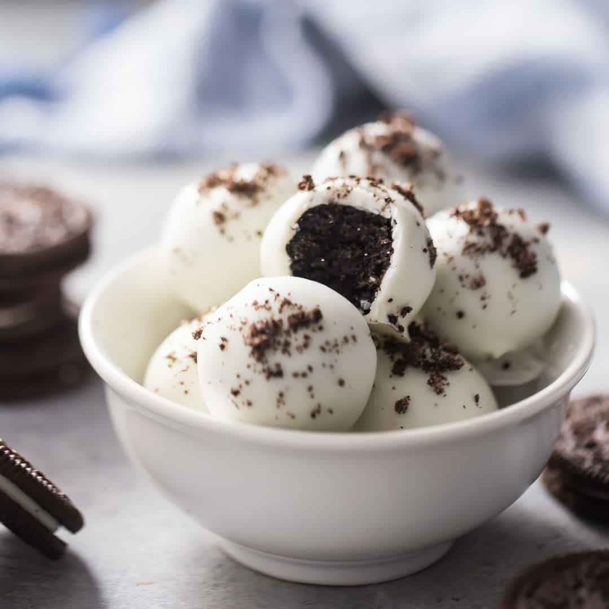

Oreo Cookie Balls

Looking for something sweet after destroying those wondering finger foods? Well you
have came to the right place, again. These next treats will have you begging for more.
These Oreo balls will do it to you!
Ingredients
- A pack oreos or cookie and cream type of cookies.
- 1 (8 ounce) package of cream cheese, at room tempature.
- 1 (12 ounce) package vanilla-flavored almond bark.
- Baking sheet
- Double boiler
Steps to creatig
- Line the baking sheet with parchment paper.
- Mix cookie crumbs and cream cheese together in a bowl.
- Roll into bakks and arrange on the prepared baking sheet.
- Freeze cookie balls until solid, about an hour.
- Melt almond bark in the top of a double boilerover simmering water, stirring frequently and scraping down the sides
with a rubber spatula
- Dip cookie balls in the melted almond bark, removing balls using 2 forks all excess bark to drip back into the boiler.
- Arrange coated cookue balls on the baking sheeet; refrigerate until coating is firm, about 10 minutes